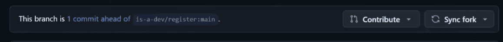
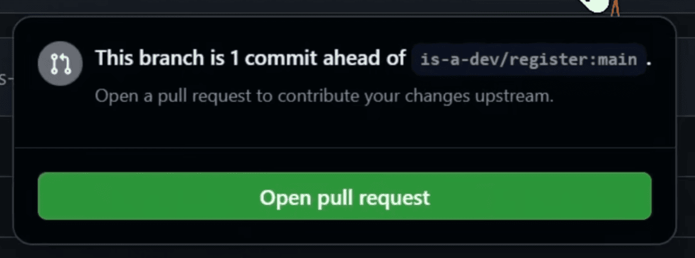

又有免费域名可以白嫖了：.is-a.dev
需要用GitHub pull request进行注册
这里顺手简单写一下教程，使用网页版操作
（要是把这至少八九千个文件拉到本地你电脑不得炸掉，反正我没敢试）
这里还有视频版
1. 检查可用性
到官网检查，里面有个Check Subdomain Availability
2. fork仓库
把GitHub仓库fork到你的账号下
3. 创建文件
详细规则参见官方文档域名结构
创建json文件，文件名对应你的域名（如123.example.json对应域名123.example.is-a.dev，而且必须要有了example.is-a.dev才能注册123.example.is-a.dev）
然后这里给出模板，对着我这里改就行了
A记录
{
"owner": {
"username": "你的GitHub用户名"
},
"records": {
"A": [
"ip地址（字符串）"
]
}
}
CNAME记录
{
"owner": {
"username": "用户名"
},
"records": {
"CNAME": "cname url值，结尾不能带点"
}
}
TXT记录
{
"owner": {
"username": "用户名"
},
"records": {
"TXT": "值"
}
}
除非网站部署的服务商要求必须使用NS记录，否则不能添加NS记录，也就是说你不能添加到Cloudflare上
如果你想要Cloudflare代理，可以使用"proxied": true
还有其他的配置，如redirect_config，可以到官网查看
4. 添加域名
在仓库的/domains目录下，点击Add files，选择Upload files
把文件拖进去，写一下提交信息，提交就行了
也可以Create new file在网页端直接写json，我不拦你
5. PR
提交之后会跳转回首页

可以看到代码上面有一排东西，还有一个写着Contribute的按钮，戳一下

弹出了个东西，点一下绿绿的Open pull reguest
就到了pr页面了，在描述哪里已经给你写了一大串东西，别手贱删掉了，阅读一遍
我这里还是放上pr描述的译文给你们看看吧（AI翻译）
<!--
为确保您的 PR 能被接受，您必须完整填写此模板。除非另有说明，否则所有项目均为必填项。
-->
# 要求
<!-- 您的域名必须满足以下所有要求，否则申请将被拒绝。 -->
<!-- 请将每个复选框更改为 [x]（全部小写，括号之间无空格）来表示您已完成该项。 -->
- [ ] 我已**阅读**并**同意** [服务条款](https://is-a.dev/terms)。 <!-- 您的请求必须遵守服务条款才能获得批准。 -->
- [ ] 我的文件遵循 [域名结构](https://docs.is-a.dev/domain-structure/) 规范。
- [ ] 我的网站是**可访问的**并且是**完整的**。 <!-- 我们不允许简单的“Hello, world!”或只是复制/大部分空白的模板网站。 -->
- [ ] 我的网站与**软件开发**相关。 <!-- 只有您的根子域名需要满足此要求。 -->
- [ ] 我的网站不用于商业用途。 <!-- 您的网站目的不应是为了产生任何形式的收入。 -->
- [ ] 我已在 `owner` 键中提供了充分的联系信息。 <!-- 请在 `email` 字段中提供您的电子邮件，或提供其他平台（例如 X/Twitter 或 Discord）以供联系。 -->
- [ ] 我已在下方提供了我的网站预览。 <!-- 此步骤是您的域名获得批准所必需的。 -->
# 网站预览
...
然后勾上复选框（- [ ]改为- [x]），最后一处要求你提供链接或截图，放上去就行了
搞定之后，猛击草绿的Create pull request！
6. 大功告成
只要你没做错什么，只需要等上几个小时（人工审核，应该是只有一个人，毕竟要房子滥用），就能看到你的pr被合并了，也就意味着注册成功了